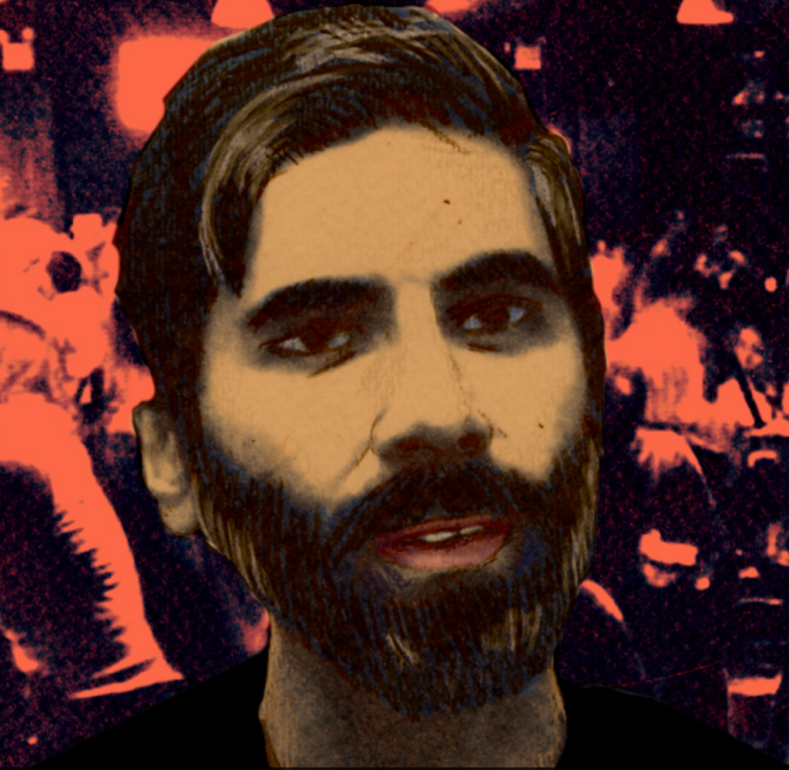
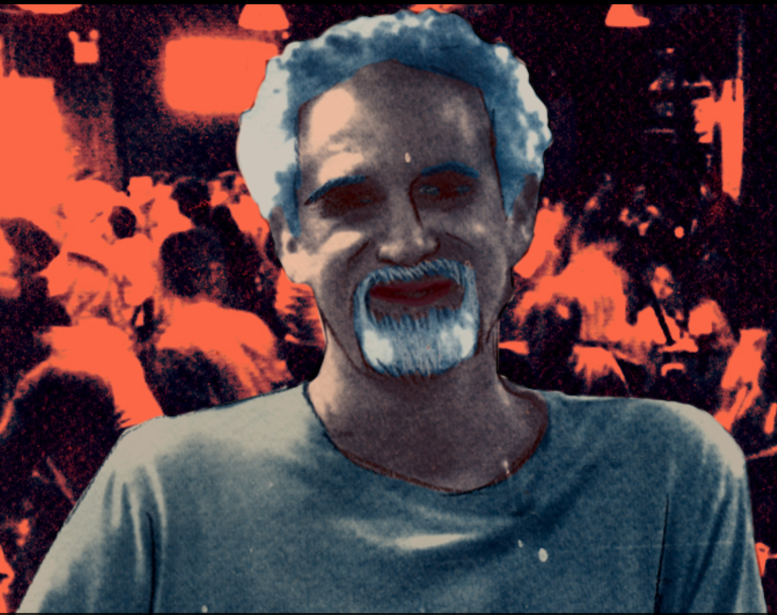
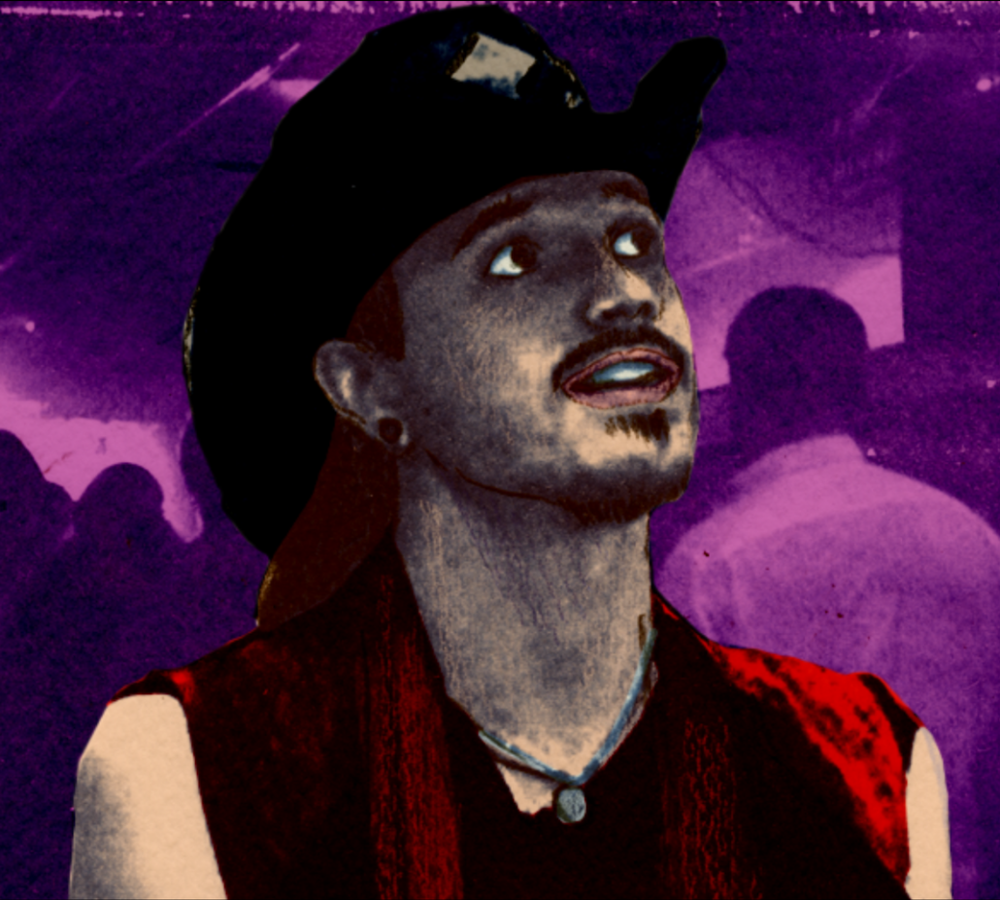
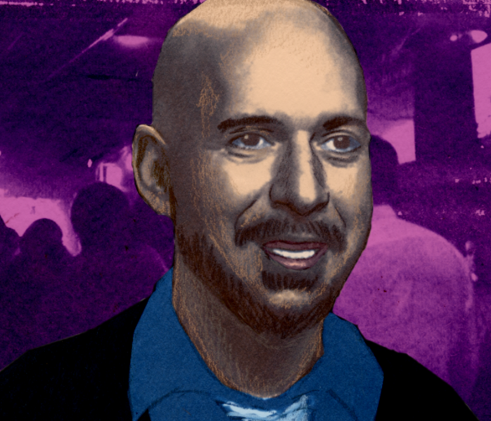
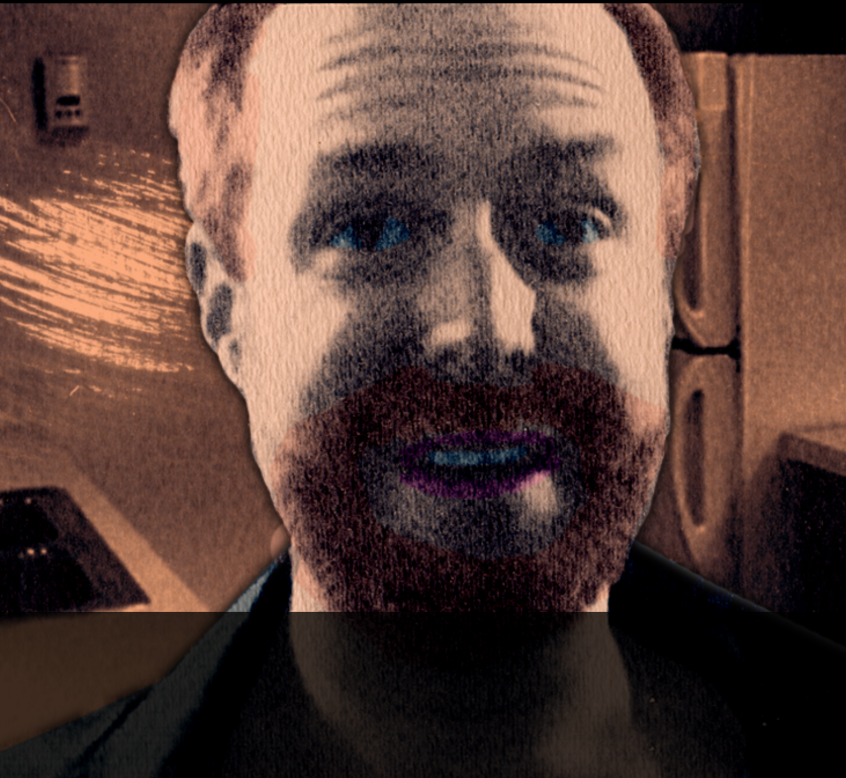

Julien Blanc
Switches tone very quickly and would go from saying “I love you” within the first lines of the conversation and often dismiss problematic actions by saying “Just quickly” right after to insulting you, illustrating how unstable he was.
A consistent theme of treating the player like a “pet” by demanding us short, brief instructions as if were an animal and eventually referring to us as an “it” and as if we were property.
Would openly insult you about your age or what type of clothing you were wearing
Physically touches without consent to try to control you Grabs your arm Tries to spin you around Picks you up and tries to bring you to the exit

Roosh V (Daryush Valizadeh)
Often makes sarcastic remarks to try to humor you and goes over physical boundaries and does things without your consent
Blunt about beliefs. Comments on your appearance. Lack of belief in consent
Degrading and judgemental attitude
“Doesn’t date feminists”

Ross Jeffrie
Would go on long reflective tangents and rants about love and connection to try to connect with you on a deeper level and show depth to his own character to you
Would do soothing breathing/calming exercises with you to eventually get you to a “relaxed state”. Similar to hypnosis acts
Tries to make you associate positive experiences and emotions with him
Would abruptly change topics to ask new questions

Mystery (Erik Von Markovik)
Does magic tricks and say witty jokes to try to get the appeal of a group setting in front of you and in an attempt to impress you
Self-deprecating remarks & looks off to the distance -> “mysteriousness”
Makes himself seem unattainable and as if other women wanted him (ex. Would be playful and tease you to not get “too greed” with him)
Constant physical advances (i.e. hand-holding, hugging, etc.) even when making it clear you aren’t interested

Neil Strauss
Superiority complex - acted as if he was above you and you had to prove yourself to him
Most notably has made offensive remarks towards japanese women
Constantly asks questions about your opinion about others in the room
Would leave and come back and make it seem like they could only talk to you for a little bit -> exclusiveness

Owen Cook
Not as polarizing as the other characters nor as prominent
Still engages in negging behavior
Talks down to te player in an attempt at seduction

A swedish pick up artist whos beliefs are so controversial and illegal, he has had his visas to other countries revoked multiple times and has been banned from several countries.
Believes in taking advantages of forgien women of color and playing off of racial sterotypes and believing himself to be superior for being white.
Most notably has made offensive remarks towards japanese women
Blanc started an online image series called #ChokingWomenAroundTheWorld in which he woldput hishands on womens necks to “seduce” them but dismissed it as a prank
Believes that men are intellectually superior to women and that they are only worth while for “sexual pleasure and fertility”
Background within the alt right and believes women should have no right to vote
Advocate of predatory behavior and sexual assualt
Believes that consent is a myth and has bragged about pushing womens boundaries for his own sexual pleasure
 ;
;
Author of multiple books regarding sleeping with women
Puts up a front of vunerability and sensitivity around women he wants to sleep with and feigns interest in their personal lives.
“How to get women you desire into bed” 1992
“Secrets of speed seduction mastery” 2010
“Subtle words that sell: how to get your prospects to convince themselves to buy without pushing, pressuring or pitching” 2018

Real name Erik Von Markovic is a canadian pick up artist who developed the technique called “The Mystery Method”
Views women as statistics, his strategy for gaining women is all about numbers and calculating how to increase your odds of finding a woman
Believes in the “anti-slut defense” in which women only turn down sex to appear less “slutty” so in response, he continues to badger them to sleep with him
Engages in "peacocking" where he attempts to grabs womens attention through silly means and then acting elusive when they are intrigued

Wrote “The Game: Penetrating the Secret Society of Pick Up Artists”
Has multiple video coaching programs, ranging from 250$-4000$
The technique used throughout his work is called “negging” , that is, giving a woman a semi-insulting compliment so that you distinguish yourself from the pack of people she’s accustomed to have hitting on her
slightly lower her self-esteem to the point that she wants your approval and is vulnerable to your advances.

Co-foudner of the dating company “Real Social Dynamics”
Featured in Strauss' book “the game”
Breags about assaulting women and recording them in sexual acts without their consent and publishing it/sharing the videos with others